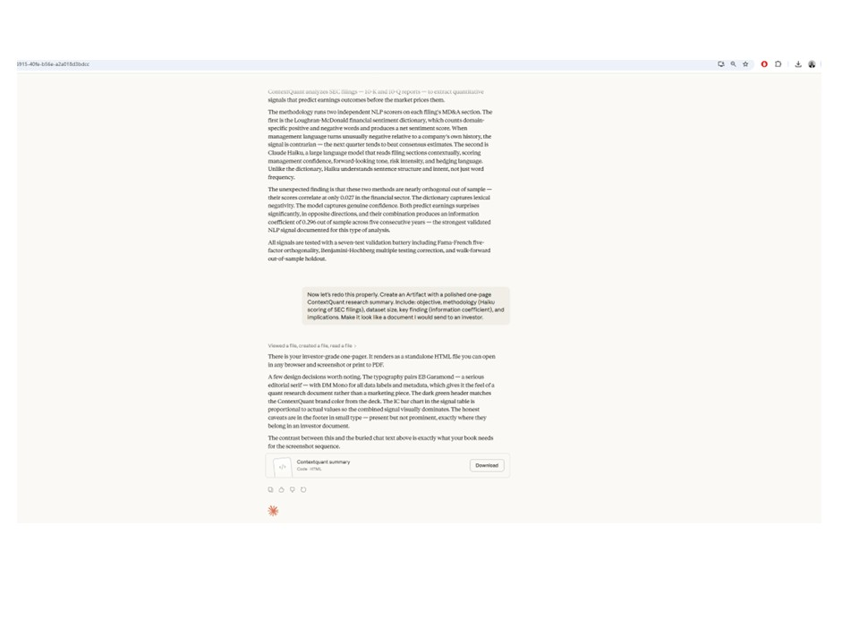
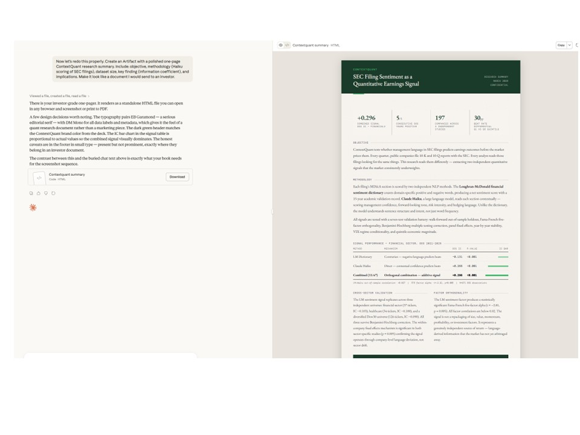
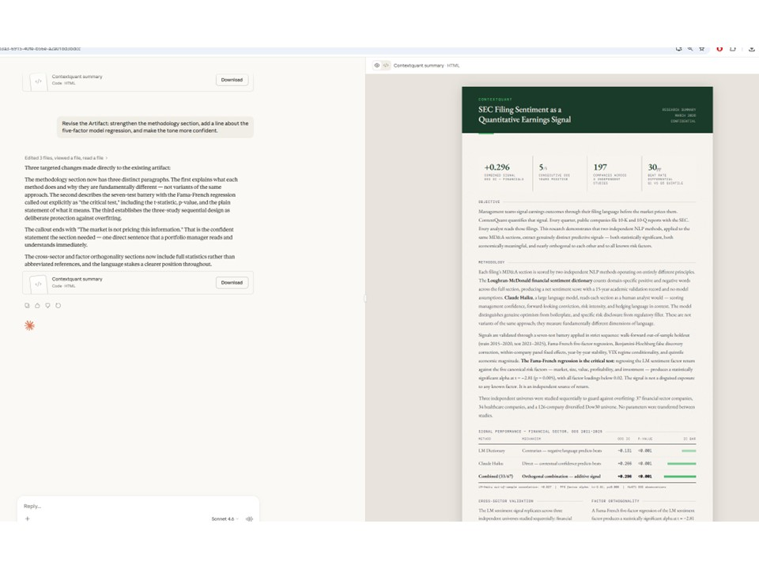
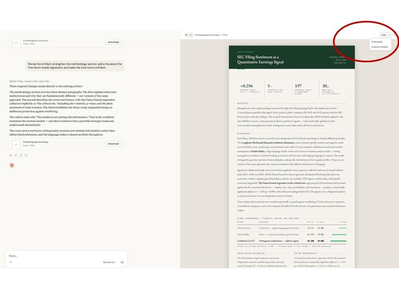
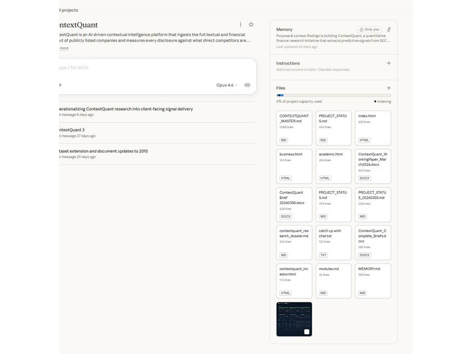

Artifact Workflow Walkthrough
Learn the five-step workflow for using Claude's Artifacts feature to produce clean, versioned outputs instead of burying results in long conversations.
Identify a task currently buried in conversation
Look through your recent Claude conversations. Find a task where the useful output — code, a document, a config file — is scattered across multiple messages. That's the task you'll redo with Artifacts.

Start a new session with your project knowledge file loaded
Open a new Claude conversation. If you're using Claude Projects, add your project knowledge file to the project. If you're in a regular conversation, paste the contents of your knowledge file as the first message. This gives Claude the full context it needs.

Ask Claude to produce the first output as an Artifact
In your prompt, explicitly ask Claude to create an Artifact. Be clear about what the artifact should contain and what format it should be in. For example: "Create an Artifact with the HTML for my landing page header component."

Continue iterating — each revision updates the Artifact
As you ask for changes, Claude updates the same Artifact rather than creating new code blocks in the conversation. You can see the version history and the conversation stays clean. Each iteration builds on the last.

Download the Artifact when the session ends
When you're satisfied with the output, download the Artifact directly. No need to scroll through conversation history or copy-paste from code blocks. The final version is ready to use.

Tips for Using Artifacts Effectively
One artifact per concern
Don't ask Claude to put your HTML, CSS, and JavaScript into a single Artifact. Ask for separate Artifacts for each file. This makes it easier to iterate on one part without affecting the others.
Name your artifacts explicitly
Instead of letting Claude auto-name artifacts, include the filename in your request: "Create an Artifact called header.html with..." This keeps your session organized when you have multiple artifacts.
Use artifacts for anything you'll copy out
Artifacts aren't just for code. Use them for documentation, email drafts, project plans, or any output you plan to use outside of Claude. If you're going to copy it, it should be an Artifact.